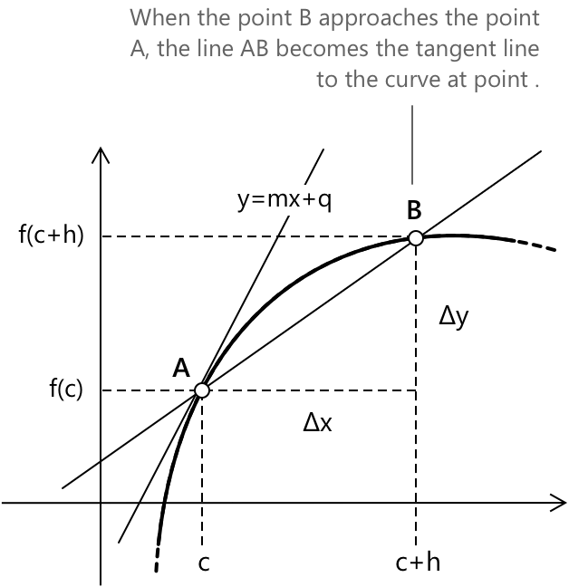

Похідні
Вступ до похідних
Розглянемо функцію \( y = f(x) \), визначену на проміжку \( [a,b] \). Похідна \( f \) у точці \( c \in (a,b) \), що позначається як \( f’(c) \), визначається, якщо границя існує і є скінченною, як границя різницевого частка при \( h \to 0 \):
\[ f’(c) = \lim_{h \to 0} \frac{f(c+h) – f(c)}{h} \]
Якщо ця границя існує для кожного \( x \) на проміжку, то похідна визначає нову функцію \( f’(x) \), яку називають похідною від \( f \). Значення \( f’(x) \) представляє кутовий коефіцієнт дотичної до графіка \( f \) у точці \( x \).
Коли \( h \to 0 \), точка \( B \) наближається до точки \( A \), і пряма \( AB \) стає дотичною до кривої в точці \( A \). Кутовий коефіцієнт дотичної в точці \( A \) називається похідною функції в точці \( c \).

Стосовно дотичної в точці \(A\) функції \( y = mx + q \), похідна \( f’(x) \) представляє значення кутового коефіцієнта \( m \).
Функція є диференційовною в точці \(c\), якщо похідна \(f’ \left(c \right)\) існує. Якщо функція є диференційовною:
- Функція визначена в околі точки \(c\).
- Границя різницевого частка відносно \(c\) існує і є скінченною при \( h \to 0 \).
- Права та ліва границі різницевого частка існують і є рівними.
Обернею операцією до диференціювання є інтегрування. Цей глибокий зв'язок між похідними та інтегралами формалізується Основною теоремою числення, яка встановлює, що диференціювання та інтегрування є оберненими процесами.
Похідні також відіграють фундаментальну роль у фізиці. Класичним прикладом є швидкість, яка визначається як похідна координати за часом. Ця проста концепція становить основу для розуміння руху та змін у фізичному світі.
Якщо функція \( f(x) \) є диференційовною в точці \( c \), то функція також є неперервною в цій точці. Однак, не всі функції, що є неперервними в точці \( c \), є диференційовними. Іншими словами, диференційовні функції утворюють підмножину неперервних функцій.
Приклад 1
Обчислимо похідну функції \( f(x) = 2x^2-3x \) у точці \( c = 2 \), використовуючи означення похідної.
\[ f’(2) = \lim_{h \to 0} \frac{f(2+h) - f(2)}{h} \]
Обчислимо значення \( f(2+h) \):
\[ \begin{aligned} f(2+h) &= 2(2+h)^2 – 3(2+h) \\[0.5em] &= 2(4 + 4h + h^2)-3(2 + h) \\[0.5em] &= 8 + 8h + 2h^2-6-3h \\[0.5em] &= 2 + 5h + 2h^2 \end{aligned} \]
Тепер обчислимо значення \( f(2) \):
\[ f(2) = 2(2^2)-3(2) = 8-6 = 2 \]
Далі обчислимо різницю \( f(2+h)-f(2) \):
\[ f(2+h)-f(2) = (2 + 5h + 2h^2)-2 = 5h + 2h^2 \]
Тепер обчислимо різницевий частку:
\[ \frac{f(2+h)-f(2)}{h} = \frac{5h + 2h^2}{h} = 5 + 2h \]
Нарешті, обчислимо границю:
\[ \lim_{h \to 0} (5 + 2h) = 5\]
Таким чином, похідна \( f(x) = 2x^2 - 3x \) у точці \( c = 2 \) дорівнює: \[ f’(2) = 5 \]
Правобічна та лівобічна похідні
Оскільки похідна є granicю різницевого частка, як і у випадку з границами, можна визначити правобічну та лівобічну похідні функції \(y=f(x)\).
Правобічна похідна: \[ f_{+}^{\prime} \left(c \right) = \lim_{h \to 0^+} \frac{f(c+h)-f \left(c \right)}{h} \]
Лівобічна похідна: \[ f_{-}^{\prime} \left(c \right) = \lim_{h \to 0^-} \frac{f(c+h)-f \left(c \right)}{h} \]
Функція є диференційовною в точці \(c\), якщо правобічна та лівобічна похідні в цій точці існують і дорівнюють одна одній. Загалом, функція \( y = f(x) \) є диференційовною на проміжку \([A, B]\), якщо вона диференційовна у всіх внутрішніх точках проміжку і якщо правобічна похідна в точці \(A\) та лівобічна похідна в точці \(B\) існують і є скінченними.
Фундаментальні похідні
-
\[ f(x) = c \quad f’(x) = 0 \]
-
\[ f(x) = x \quad f’(x) = 1 \]
-
\[ f(x) = x^a \quad a \in \mathbb{R}, x > 0 \quad f’(x) = ax^{a-1} \]
-
\[ f(x) = \sqrt{x} \quad x > 0 \quad f’(x) = \frac{1}{2\sqrt{x}} \]
-
\[ f(x) = a^x \quad f’(x) = a^x \ln(a) \]
-
\[ f(x) = \log_a(x) \quad f’(x) = \frac{1}{x \log(a)} \]
-
\[ f(x) = \ln(x) \quad f’(x) = \frac{1}{x} \]
-
\[ f(x) = e^x \quad f’(x) = e^x \]
-
\[ f(x) = \sin(x) \quad f’(x) = \cos(x) \]
-
\[ f(x) = \cos(x) \quad f’(x) = -\sin(x) \]
-
\[ f(x) = \tan(x) \quad f’(x) = 1 + \tan^2(x) \]
-
\[ f(x) = \cot(x) \quad f’(x) = -(1 + \cot^2(x)) \]
-
\[ f(x) = \arcsin(x) \quad f’(x) = \frac{1}{\sqrt{1 – x^2}} \]
-
\[ f(x) = \arccos(x) \quad f’(x) = \frac{-1}{\sqrt{1 – x^2}} \]
-
\[ f(x) = \arctan(x) \quad f’(x) = \frac{1}{1 + x^2} \]
-
\[ f(x) = \text{arccot}(x) \quad f’(x) = \frac{-1}{1 + x^2} \]
\( f(x) = c \); Похідна: \( f’(x) = 0 \), оскільки пряма \( y = c \) паралельна осі x, її кутовий коефіцієнт \( m \) дорівнює 0.
\( f(x) = x \); Похідна: \( f’(x) = 1 \). Функція \( y = x \) є бісектрисою першої та третьої чвертей, і її кутовий коефіцієнт \( m \) дорівнює 1.
\( f(x) = x^a \), \( a \in \mathbb{R}, x > 0 \); Похідна: \( f’(x) = ax^{a-1} \)
Операції з похідними
Похідна від добутку сталі \( c \) та диференційовної функції \( f(x) \) дорівнює добутку сталі та похідної функції. Це виражається так:
\[D[c \cdot f(x)] = c \cdot f’(x) \]
Наприклад, якщо \( c = 3 \) і \( f(x) = x^2 \), то:
\[ D[3 \cdot x^2] = 3 \cdot f’[x^2] = 3 \cdot 2x = 6x \]
Похідна від суми двох функцій \( f(x) \) та \( g(x) \) дорівнює сумі їхніх похідних. Це виражається так:
\[D[f(x) + g(x)] = f’(x) + g’(x) \]
Наприклад, якщо \( f(x) = x^2 \) і \( g(x) = 3x \), то:
\[D[x^2 + 3x] = f’(x^2) + g’(3x) = 2x + 3 \]
Похідна від добутку двох функцій \( f(x) \) та \( g(x) \) визначається за правилом добутку. Це виражається так:
\[D[f(x) \cdot g(x)] = f’(x) \cdot g(x) + f(x) \cdot g’(x) \]
Наприклад, якщо \( f(x) = x^2 \) і \( g(x) = 3x \), то:
\[ \begin{aligned} D[x^2 \cdot 3x] &= f’(x^2) \cdot g(3x) + f(x^2) \cdot g’(3x)\\[0.5em] & = 2x \cdot 3x + x^2 \cdot 3 \\[0.5em] & = 6x^2 + 3x^2 = 9x^2\\ \end{aligned} \]
Похідна від частки двох функцій \( f(x) \) та \( g(x) \), де \( g(x) \neq 0 \), визначається за правилом частки. Це виражається так:
\[ D\left[\frac{f(x)}{g(x)}\right] = \frac{f’(x) \cdot g(x)-f(x) \cdot g’(x)}{g^2(x)} \]
Наприклад, якщо \( f(x) = x^2 \) і \( g(x) = 3x + 1 \), то:
\[ \begin{aligned} D\left[\frac{x^2}{3x + 1}\right] &= \frac{2x \cdot (3x + 1)-x^2 \cdot 3}{(3x + 1)^2}\\[0.5em] &= \frac{6x^2 + 2x-3x^2}{(3x + 1)^2} \\[0.5em] &= \frac{3x^2 + 2x}{(3x + 1)^2}\\[0.5em] \end{aligned} \]
Похідна від оберненої функції \( f(x) \), де \( f(x) \neq 0 \), визначається так:
\[ D\left[\frac{1}{f(x)}\right] = -\frac{f’(x)}{f^2(x)} \]
Наприклад, якщо \( f(x) = 3x + 1 \), то:
\[ D\left[\frac{1}{3x + 1}\right] = -\frac{3}{(3x + 1)^2} \]
При диференціюванні композиції двох функцій цих правил недостатньо. У такому разі необхідно застосувати похідну складеної функції, також відому як правило ланцюга.
Похідні вищих порядків
Загалом, похідні, які ми розглянули до цього, є першими похідними функції \( y = f(x) \). Процес диференціювання можна ітерувати, щоб обчислити похідні вищих порядків від першої похідної, такі як друга похідна та третя похідна.
Наприклад, нехай функція \( y = f(x) = 3x^3 - 2x^2 + 1 \).
-
Перша похідна функції: \[ f’(x) = 9x^2 - 4x \]
-
Друга похідна: \[ f’'(x) = 18x - 4 \]
-
Третя похідна \[ f^{\prime \prime \prime}(x) = 18 \]
Перша та друга похідні відіграють фундаментальну роль в аналізі локальної поведінки функцій, зокрема у визначенні точок мінімуму та максимуму, а також точок перегину.
Ключові теореми диференціального числення
Похідні також лежать в основі деяких найважливіших теорем диференціального числення.
- Теорема Вейєрштрасса гарантує, що неперервна функція на замкненому та обмеженому проміжку досягає як свого максимуму, так і мінімуму.
- Теорема Ферма встановлює необхідну умову для локальних екстремумів.
- Теорема Ролля та Теорема Лагранжа, також відома як теорема про середнє значення, описують фундаментальні властивості диференційовних функцій на замкненому проміжку.
- Подальші узагальнення надають Теорема Коші та Правило Лопіталя, яке розширює використання похідних для обчислення невизначених форм границь.
Рівняння дотичної
Кутовий коефіцієнт дотичної до графіка функції \( f(x) \) у точці \( x_0 \) задається похідною \( f’(x_0) \). Це значення представляє миттєву швидкість зміни функції в цій точці та збігається з границею кутових коефіцієнтів січних, що наближаються до \( x_0 \).
Точніше, якщо ми розглянемо другу точку \( x_0 + h \), кутовий коефіцієнт січної, що проходить через точки \( (x_0, f(x_0)) \) та \( (x_0 + h, f(x_0 + h)) \), дорівнює:
\[ \frac{f(x_0 + h) - f(x_0)}{h} \]
Якщо границя цього виразу існує при \( h \to 0 \), функція є диференційовною в \( x_0 \), і ця границя дорівнює \( f’(x_0) \). Таким чином, дотична розуміється як граничне положення січних.
Якщо похідна існує і є скінченною, дотична не є вертикальною. У такому разі її рівняння можна записати у вигляді рівняння прямої через точку та кутовий коефіцієнт. Оскільки пряма проходить через точку \( (x_0, f(x_0)) \) і має кутовий коефіцієнт \( f’(x_0) \), її рівняння має вигляд:
\[ y – f(x_0) = f’(x_0)(x – x_0) \]
Ця лінійна функція забезпечує найкраще лінійне наближення \( f \) поблизу \( x_0 \). Фактично, для значень \( x \), близьких до \( x_0 \), приріст функції задовольняє рівність:
\[ f(x) \approx f(x_0) + f’(x_0)(x - x_0) \]
що виражає ідею про те, що на достатньо малих масштабах диференційовна функція поводиться приблизно як її дотична.
Приклад 2
Розглянемо параболу, задану рівнянням \( y = 2x^2 + 3x \), і визначимо дотичну в точці \( P(1, 5) \).
Спочатку обчислимо похідну \( f’(x) \), і отримаємо:
\[2x+3\]
Обчислимо кутовий коефіцієнт дотичної при \( x = 1 \):
\[ f’(1) = 2(1) + 3 = 5 \]
Отже, кутовий коефіцієнт дотичної дорівнює \( m = 5 \). Маємо:
\[y - f(1) = f{\prime}(1)(x – 1) \rightarrow y - 5 = 5(x - 1)\]
Завершивши обчислення, отримаємо рівняння дотичної:
\[ y = 5x \]
Часткові похідні
Похідні є фундаментальними в багатозмінному численні. Коли функція залежить від кількох змінних, швидкість зміни відносно однієї змінної при збереженні всіх інших змінних сталими описується частковою похідною:
\[ \frac{\partial f}{\partial x_i}(x_0) \;=\; \lim_{h \to 0} \frac{f(x_1^0, \ldots, x_i^0 + h, \ldots, x_n^0) - f(x_0)}{h} \]
Вектор усіх часткових похідних утворює градієнт \( \nabla f \), який вказує напрямок найшвидшого зростання \( f \). Для детального розгляду, включаючи похідні вищих порядків, теорему Шварца, матрицю Якобі та правило ланцюга для функцій кількох змінних, зверніться до статті про часткові похідні.
Вибрані джерела
-
MIT OpenCourseWare. Математичний аналіз однієї змінної – Конспекти лекцій (Похідні)
-
University of British Columbia. Диференціювання – Конспекти лекцій
-
University College London (UCL). Про диференціювання I
-
Simon Fraser University. Математичний аналіз III – Часткові похідні
-
Portland State University. Задачі та вправи з математичного аналізу
-
Northwestern University. Дійсний аналіз – Конспекти лекцій
-
Penn State University. Математичний аналіз – Похідні та їх застосування